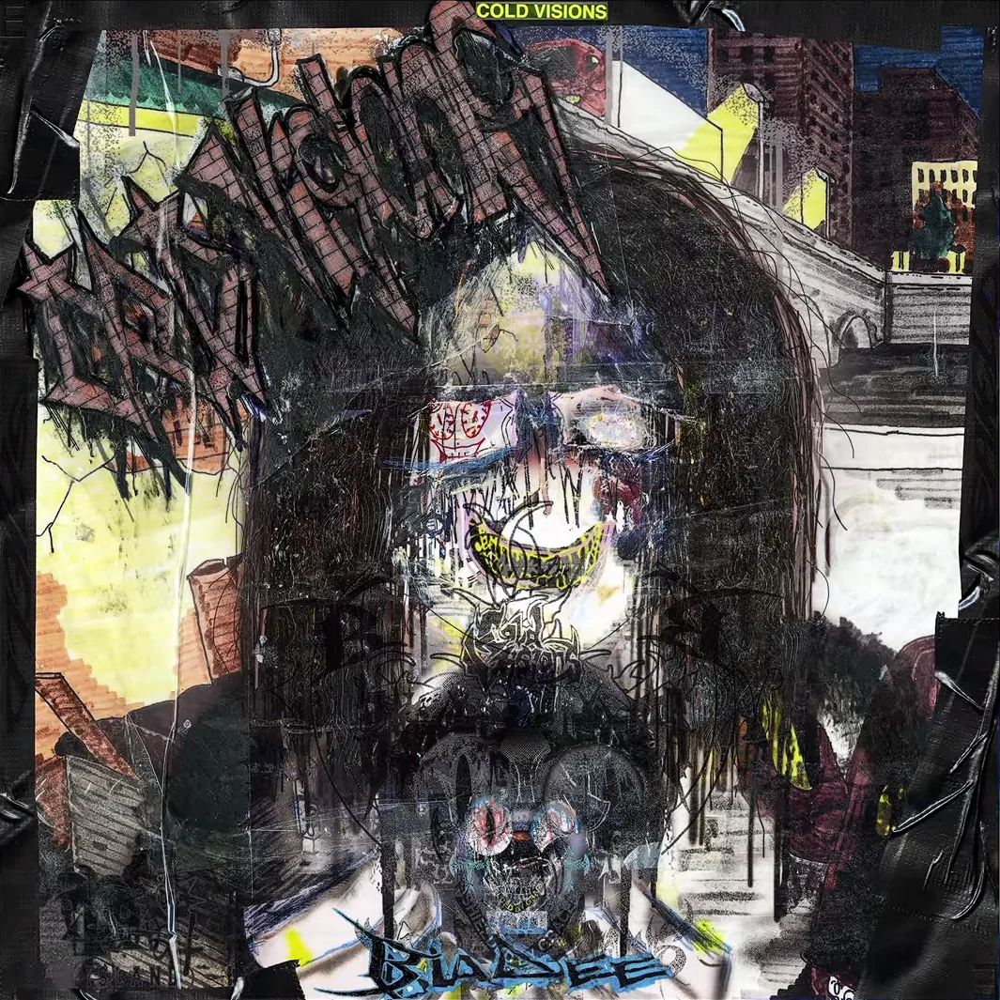

Cold Visions is a studio album by Swedish rapper Bladee, released on 23 April 2024 through Trash Island. A surprise album, Cold Visions was released following Bladee and Yung Lean's collaborative rock album Psykos the previous month. Wikipedia
1. "Coda" 2:35
2. "Ghosts" 3:00
3. "Golden God" 2:16
4. "Still" 3:37
5. "Sold Out" 2:16
6. "Hanging from the Bridge" 3:07
7. "Enemy" 2:51
8. "Things Happen" 2:34
Total length: 22:16